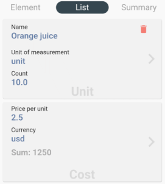
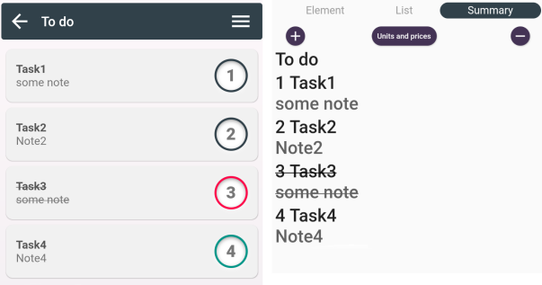
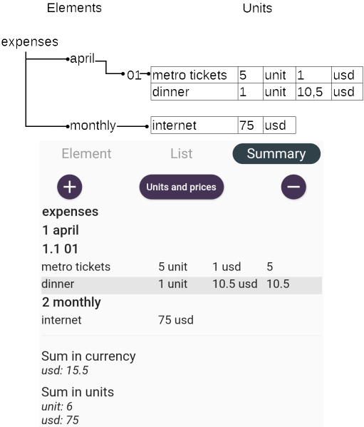
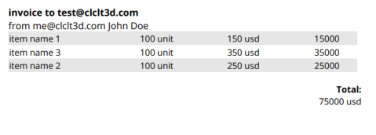
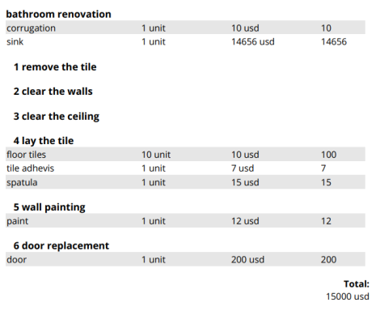

"Calculated" is your assistant in your affairs and various tasks. Create ready-to-use and draft documents. Keep records and plan activities.
Install the app.
Your data is stored on your device and is not shared with third parties. All responsibilities for privacy and data storage are assigned to the user. Protect your device!
Currently, the app runs on Android version 10 and higher. We also plan to release it for IOS; this event will be announced in advance.
All changes are saved immediately and automatically.
To edit, swipe the element to the right.
To delete, swipe the element to the left.
To select or deselect, hold the element for some time.

By clicking on an element, you go down a level in the project tree. The project tree consists of catalogs and elements.
The catalog is designed for easy storage of your projects. A catalog can contain other catalogs or elements. You can transfer all the information from the catalog, including the subsections. To do this, open the catalog in edit mode, select share -data file - clcltd. You can set a name and a note for the catalog.

The elements have a more extended usage and functions. Like catalogs, elements can be transferred as data files and set with a name and a note. Additionally, the element can be transferred in portable document format (PDF) and spreadsheet format, including all subsections. It can be assigned a sequential number in the list; by default, the number would be the maximum in the current section. The "active" parameter is intended for visual use; this element will be marked as crossed out in all lists or will not be displayed, depending on the settings. Set the color as desired. Mark the significance of this task with color or use it for other purposes.

The element screen contains two additional sub-screens - the list and totals. The list tab contains the products and services used in your project, add and remove them as needed.
After adding products or services, you can fill in the required fields: name, name dimension, quantity, unit price, and currency. For examples of solving various tasks, see the section - Usage examples. The totals tab contains the totals of the entire project tree; the totals include both the current element and all sub-elements.

You can increase or decrease the font in this report, as well as sort the list by name/quantity.
Use the Copy, Cut, Paste, Select All operations to manage the contents of elements and catalogs. In the settings menu, you can select the language and set the parameters that will be reflected in all the results.
This is a file in JSON format. It can be generated and transferred from any external system. File format:
{
"e":[
{
"ElementUUID":"element’s universally unique identifier",
"ElementParentUUID":"Element parent’s universally unique identifier, the top-level element has an empty value",
"ElementName":"Element name",
"ElementNote":"Element note",
"ElementType":"ElementType.Element, ElementType.Folder",
"ElementCanceled":0 or 1,
"ElementColor":"red, green, blue, black",
"ElementPosition":position - Integer 0-999.
},.....
],
"ems":[
{
"ElementUid":"element’s unique identifier to which the product or service is linked",
"Uid":"unique identifier of the product or service",
"Name":"Name of the product or service",
"UnitName":"Unit measurement",
"UnitOutcomeCnt":Quantity - double,
"UnitOutcomeCost":Cost - double,
"UnitOutcomeCurr":"Currency"
},.....
]
}
To create a backup copy of your data, upload a catalog or element to the clcltd data file and save it in any place convenient for you. Then, if necessary, download it again.
Open the app and add a new element by clicking the "+" button. Set the name of the element - "Current affairs", add elements specifying the necessary tasks.
Open the app and add a new catalog by clicking the "+" button. Set the name of the catalog - "Expenses" or "Income", click the "back" button. Click on the created folder. When you go down to the contents of the catalog, create the element, set the name of the element, for example - "April". Click the "back" button and then click on the newly created element. Create a new element with an expense date, for example, "01". In the element's content, switch to the list tab, add products and services by specifying: name, units of measurement, quantity, unit price, and currency. You can choose not to specify the cost of the product per unit and only enter the name of the product or service; in the unit of measurement, enter the currency and specify the amount of currency in quantity. In the content of the "April" element, on the totals tab, see the totals and contents of all days.
Open the app and add a new catalog by clicking the "+" button. Click on the created folder. When you go down to the catalog content, create an element and enter any name for it, for example, the name of the counter-party or the price list. In the element's content, switch to the list tab, add products and services by specifying: name, units of measurement, quantity, unit price, and currency. When finished, you can send the document in PDF, XLS formats or upload the data file to your colleagues. You can make decomposition of this element, for example, by separating the price lists of vegetables and fruits.
Open the app and add a new catalog by clicking the "+" button. Click on the created catalog. Go down to the catalog's contents and create an element. Set any name for the element, for example - planning / repair / estimate. Go to the list section and enter the necessary materials and services. You can make decomposition of this element, for example, by separating the renovation of the bedroom and hallway.
